FRONT DOOR LOCK > INSTALLATION |
| 1. INSTALL FRONT DOOR INSIDE LOCKING CABLE ASSEMBLY LH |
Install the front door inside locking cable assembly.
Attach the 3 claws.
| 2. INSTALL FRONT DOOR LOCK REMOTE CONTROL CABLE ASSEMBLY LH |
Install the front door lock remote control cable assembly.
| 3. INSTALL FRONT DOOR LOCK ASSEMBLY LH |
Apply MP grease to the sliding parts of the front door lock assembly.
Install a new door lock wiring harness seal to the front door lock assembly.
| 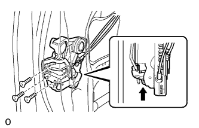 |
Insert the front door lock open rod to the front door lock assembly.
 | Slide |
Check that the front door lock open rod is securely connected to the front door lock assembly.
Using a T30 "TORX" wrench, install the front door lock assembly with the 3 screws.
Connect the connector.
| 4. INSTALL FRONT DOOR OUTSIDE HANDLE COVER WITH LOCK CYLINDER ASSEMBLY |
Install the front door outside handle cover with lock cylinder assembly.
| 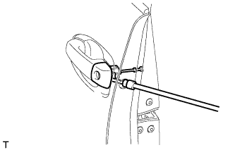 |
Using a T30 "TORX" socket wrench, install the front door lock cylinder with the screw.
| 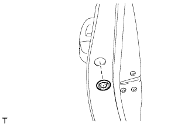 |
Install the hole plug.
| 5. INSTALL FRONT DOOR REAR LOWER FRAME SUB-ASSEMBLY LH |
| 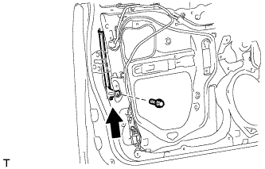 |
Install the front door rear lower frame sub-assembly with the bolt as shown in the illustration.
| 6. INSTALL FRONT DOOR GLASS RUN LH |
 |
Install the front door glass run.
| 7. INSTALL FRONT DOOR GLASS SUB-ASSEMBLY LH |
Connect the cable to the negative (-) battery terminal.
Connect the power window regulator master switch assembly and move the front door glass sub-assembly so that the door glass bolt installation locations can be seen.
Disconnect the cable from the negative (-) battery terminal and power window regulator master switch assembly.
| Condition | Waiting Time |
| Vehicle enrolled in G-BOOK system | 6 minutes |
| Vehicle not enrolled in G-BOOK system | 1 minute |
| 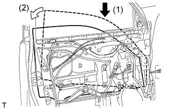 |
Insert the front door glass sub-assembly into the front door panel along the front door glass run as indicated by the arrows in the order shown in the illustration.
| 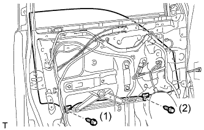 |
Install the front door glass sub-assembly with the 2 bolts.
| 8. INSTALL FRONT DOOR SERVICE HOLE COVER LH |
Apply new butyl tape to the front door panel.
| 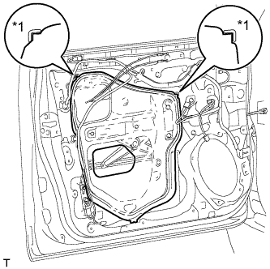 |
Pass the front door lock remote control cable assembly and front door inside locking cable assembly through a new front door service hole cover.
Attach the front door service hole cover using the reference points on the front door panel.
| *1 | Reference Point |
 |
Attach the 2 clamps.
Install the bolt to the front door wire.
| 9. INSTALL FRONT NO. 1 SPEAKER ASSEMBLY |
Temporarily install the speaker by attaching the 2 claws of the speaker to the door panel.
| 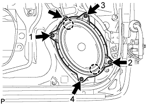 |
Install the speaker with the 4 screws in the order shown in the illustration.
Connect the speaker connector.
| 10. INSTALL FRONT DOOR INNER GLASS WEATHERSTRIP LH |
| 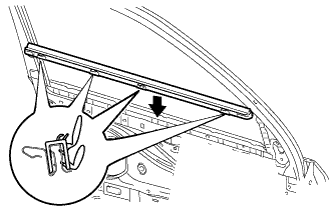 |
Install the front door inner glass weatherstrip.
| 11. INSTALL FRONT DOOR TRIM BOARD SUB-ASSEMBLY LH |
| 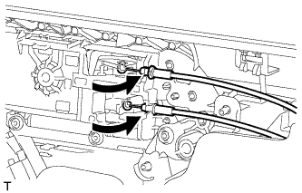 |
Connect the front door lock remote control cable assembly and front door inside locking cable assembly.
Connect 2 connectors.
| 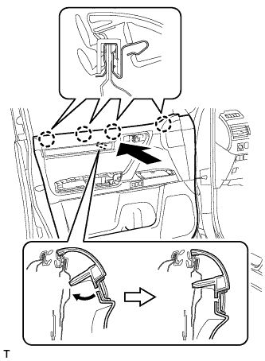 |
Attach the front door trim board sub-assembly by attaching the 4 claws of the front door inner glass weatherstrip as shown in the illustration.
 |
Attach the 12 clips and front door trim board retainer to install the front door trim board sub-assembly.
Install the 3 screws.
| 12. INSTALL POWER WINDOW REGULATOR MASTER SWITCH ASSEMBLY WITH FRONT DOOR BASE PANEL |
Connect the connector.
Attach the 2 clips, 4 claws and guide to install the power window regulator master switch assembly with front door armrest base panel.
| 13. INSTALL FRONT ARMREST ASSEMBLY LH |
Attach the 7 claws and 7 guides to install the front armrest assembly.
| 14. INSTALL FRONT DOOR INSIDE HANDLE BEZEL PLUG LH |
Attach the 3 claws to install the front door inside handle bezel plug.
| 15. INSTALL FRONT DOOR LOWER FRAME BRACKET GARNISH LH |
Attach the 2 claws to install the front door lower frame bracket garnish.
| 16. CONNECT CABLE TO NEGATIVE BATTERY TERMINAL |
| 17. CHECK SRS WARNING LIGHT |
Check the SRS warning light (Click here).